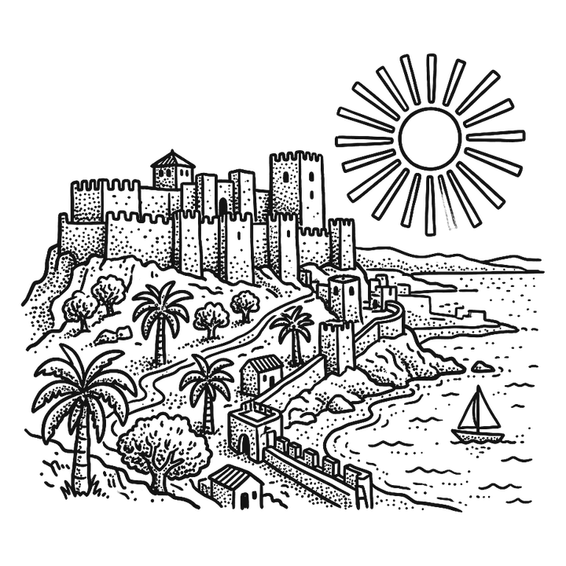

Przystanek ✦
01
Malaga

Tu zaczynasz. W lutym jest ok. 18 stopni, więc kurtka szybko ląduje w plecaku, a spod katedry na plażę idziesz jakiś kwadrans. Malaga to miasto Picassa, arabskich murów i smażonych rybek jedzonych na stojąco przy barze.
Co zobaczyć
- Alcazaba i zamek Gibralfaro – arabska twierdza z XI wieku, połączona murami z zamkiem na wzgórzu, skąd widać port i całe miasto.
- Teatr rzymski – ma ok. 2000 lat, a odkryto go przypadkiem dopiero w 1951 roku, przy pracach pod nowy ogród.
- Museo Picasso Málaga – Picasso urodził się tu w 1881 roku. Jego dom rodzinny stoi kilka minut dalej, przy Plaza de la Merced.
- Mercado de Atarazanas – hala targowa w miejscu arabskiej stoczni. Wchodzisz przez bramę z XIV wieku, a w środku czekają owoce, oliwki i tapas.
Ciekawostka
Katedra ma przezwisko „La Manquita”, czyli „Jednoręka”, bo jej południowej wieży nigdy nie dokończono.
Pogoda w lutym
W dzień ok. 18°C, w nocy ok. 8°C. Morze ma 15–16°C – spacer brzegiem tak, pływanie tylko dla odważnych.